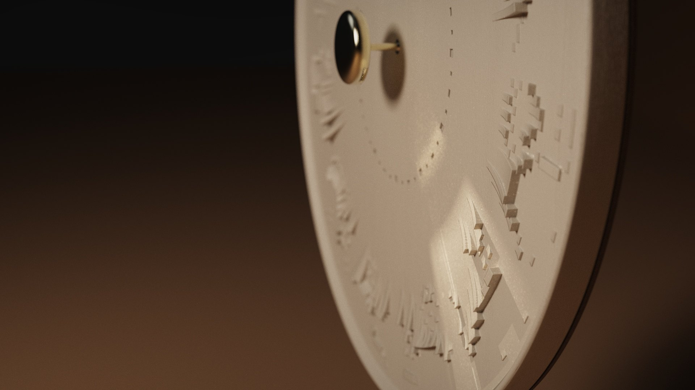

The hour hand is a beam of light. Where it falls, a carved relief throws the shadow of a cat; everywhere else the dial stays quiet.

1.1Idea
Time, shaped by light and shadow.
The dial is divided into twelve sectors, one for every two hours of a 24-hour day. Each sector holds one pose from a cat's day: asleep under the stars after midnight, breakfast at six, a nap at noon, waiting for dinner at seven.
1.2How it works
A point light, a moving window and a computed relief.
An LED sits on the axis 20 mm above the dial. A black cup around it opens a 30° window that turns with the LED, so exactly one sector is lit. Within that sector, walls and blocks a few millimetres high are shaped so that their shadows, and the faces that catch the light, draw the cat.
1.3Key figures
| Item | Value |
|---|---|
| Dial | Ø 300 mm wood, pattern ring r 97.9–143.8 mm |
| Light | 1.6 mm CSP LED, H = 20 mm, 30° window |
| Image | 12 sectors × 20 wedges × 15 rings, cells 2.5–3.7 mm |
| Tones | shadow · half-lit · floor · bright |
| Relief | 0.5–5.3 mm walls, 6 : 1 ramps, tilted blocks |
| Movement | 2 h dwell, ≈ 2 s sweep, rewind at 00:00 |
| Wall edition | 35.5 mm behind the dial, head 23.7 mm in front |